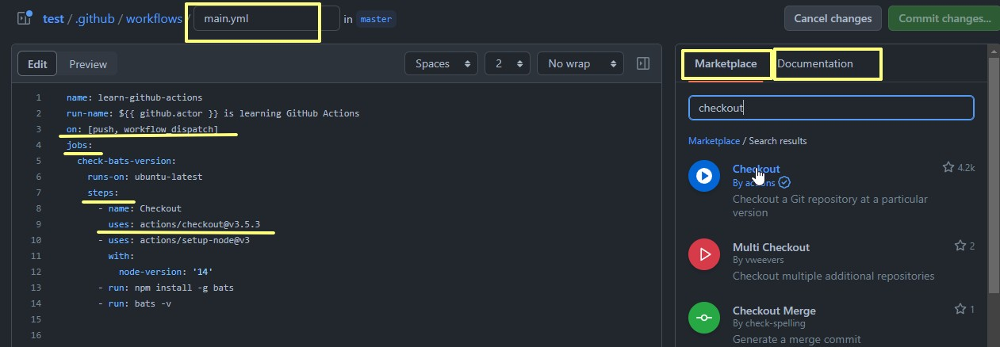

CI/CD GitHub Actions
Makaeva Elena
CI/CD
is an automation process for developers
- CI - Continuous Integration
- CD - Continuous Delivery
GitHub Actions
is a CI/CD platform that allows you to automate your build,
test, and deployment
pipeline
Automate tasks within your software development life cycle
is a CI/CD platform that allows you to automate your build, test, and deployment pipeline
Automate tasks within your software development life cycle
Events
is trigger GitHub to react

- Push
- Pull_request
- Fork
- Issues
- Release
on: [push]
workflow
is the name of the configuration that contains all the jobs to execute
name: my-workflow
jobs
is a container that holds all the Steps to perform
#Configure jobs below
jobs:
#Name the Job by setting a key value
my-job:
name: My custom job
# Set the operation system to use on during the Job
runs-on: ubuntu-latest
# Configure the steps that are part of the job
steps: #Comes later in the article
steps
Jobs can contain many steps. A step is an actual action to perform
steps:
- name: Set up Go 1.x
uses: actions/setup-go@v2
with:
go-version: ^1.15.5
- name: Check out code from the repository
uses: actions/checkout@v2
- name: Run a terminal command
run: echo "Hello World" && pwd
GitHub Actions
Create workflow
GitHub Actions are only available for free if the repository is public
press the “Set up this workflow”
Here we can edit our workflow and commit it
If you in local repository:
- create the .github/workflows/
- In the .github/workflows/ directory, create a new file called
learn-github-actions.yml
Add the following code
YAML
name: learn-github-actions
run-name: ${{ github.actor }} is learning GitHub Actions
on: [push, workflow_dispatch]
jobs:
check-bats-version:
runs-on: ubuntu-latest
steps:
- uses: actions/checkout@v3
- uses: actions/setup-node@v3
with:
node-version: '14'
- run: npm install -g bats
- run: bats -v
You can use helpful hints

When you commit and push the changed configuration
Run workflow
Go to 'Actions' Tab
And run workflow
You should see a job either in Queue or finished.
More in-depth statuses about all the jobs inside the workflow
Detailed information and output from each step.
You can see all the process in the step
You can to modify the configuration, press edit to begin changing it.
Marketplace
https://github.com/marketplace -> `Actions` tab
Yes, they do provide us with pre-built configurations to perform almost anything!
Search for anything you’re interested in and add it to configuration
sources